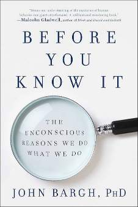

The Unconscious as Autopilot ✈️
Your unconscious is the boss 👑, running 95% of life—walking 🚶♂️, driving 🚗, sizing up folks 👀—no brain sweat needed! Bargh’s 1996 trick 🎩 (old words = slow steps) proves it’s auto-scripts all the way 📜.

A captivating journey into the hidden forces driving our everyday actions 🌟
Dropped in 2017 by Touchstone (Simon & Schuster) 📚, "Before You Know It" by John Bargh, Ph.D., cracks open the secret world of our unconscious mind 🧠✨. Bargh, a Yale brainiac 👨🔬 and priming guru, spills 30+ years of lab magic 🧪—think slow walkers after "old" words—to show how unseen vibes steer our choices 🎯, likes 👍, and moves 🏃♂️. With ten chapters 📖, he mixes science 🔬, personal tales (like his dad’s WWII grit 🇺🇸), and pop culture nods (*The Truman Show* 🎥) to prove we act *before we know it*—thanks to ancient instincts 🦁, kid-years coding 👶, and sneaky now-cues 🌍. It’s a brainy ride 🚀 with real-life hacks ⚙️!
Bargh splits it into three time zones ⏳: the deep past (survival vibes 🏞️), your past (kid lessons 🎓), and right now (room vibes 🏠). From snack picks 🍪 to trusting a warm mug ☕, he says free will’s less free than we think 🤔—but we can nudge it! Packed with evidence 📊 and chill vibes 😎, it’s a must-know as of March 22, 2025 📅.
Your unconscious is the boss 👑, running 95% of life—walking 🚶♂️, driving 🚗, sizing up folks 👀—no brain sweat needed! Bargh’s 1996 trick 🎩 (old words = slow steps) proves it’s auto-scripts all the way 📜.
Tiny hints—words 📝, smells 👃, warmth ☕—prime us on the sly. Bargh’s warm-hand study 🤝 (2008) shows they tweak feelings 😊 and picks 🎲 before we blink 👁️.
Our brain’s old-school wiring ⚡ loves sweets 🍬 (energy!) and fears snakes 🐍 (yikes!). These survival hacks now mess with modern life—like pigging out 🍔 or snap judgments ⚖️.
Kid years 👶 and culture 🌍 bake in goals—like chasing claps 👏 or dodging shame 😳—that steer grown-up us. Bargh links it to attachment vibes 👨👩👧 and sneaky memory 🧠.
Right-now stuff—like a messy desk 🗑️ or a grin 😊—flips unconscious switches. Bargh’s "broken windows" tests 🏚️ show chaos cuts control—context is king 👑!
You snag a cookie 🍪 over an apple 🍎, hooked by ancient sugar vibes 🧬. Spot it, swap the jar for fruit 🍇—boom, healthier you! 🌟
A warm coffee ☕ pre-interview makes you chill 😎—priming magic! You nail it 🤝, then prep with cozy vibes next time 🔥.
Messy desk 🗑️ primes dawdling 😴; you stall. Tidy up 🧹, and bam—focus flows 💡, thanks to Bargh’s chaos theory 🏚️.
Your kid apes your cool tone 😌 from baby days, wired for chill. Keep it steady during meltdowns 🌩️—legacy win! 🏅